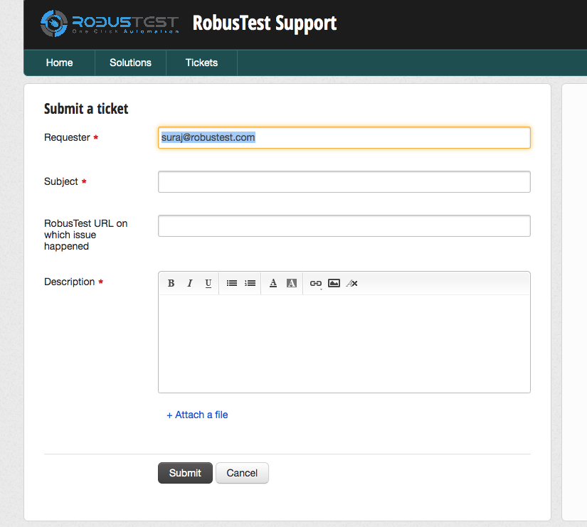

User Profile
Overview
The User Profile section provides access to your personal account settings, security credentials, and support resources. Located in the top right corner of the RobusTest interface, your username serves as the gateway to essential account management features.
Accessing Your Profile
Click on your username in the top right corner to access a dropdown menu with the following options:
Profile - Access your user account settings and API credentials
Help - Access comprehensive product documentation
Support - Contact RobusTest technical support team
Logout - Securely sign out of your account
Profile Settings
The Profile section contains your personal account information and API access credentials.
Account Information:
Name Your display name on the RobusTest platform.
Editable: You can update your display name at any time
Visibility: This name appears in project member lists and activity logs
Best Practice: Use a professional name that helps team members identify you
Email Address Your registered email address for the RobusTest account.
Read-only: Email addresses cannot be modified after account creation
Purpose: Used for notifications, password resets, and account communication
Security: Contact support if you need to change your email address
Access Key Management Your personal API access key for programmatic access to RobusTest services.
Important
Security Notice: Your access key provides full API access to your account. Keep it secure and never share it publicly.
Access Key Features:
Copy Access Key: Click to copy your access key to the clipboard
Hide/Show Access Key: Toggle visibility of your access key on screen
Reset Access Key: Generate a new access key (invalidates the previous one)
Access Key Usage:
API Authentication: Required for all RobusTest API calls
CI/CD Integration: Used in automated build and test pipelines
Custom Scripts: Enables custom automation and integration scripts
Remote Operations: Allows remote build uploads and test execution
Warning
Access Key Reset: Resetting your access key will invalidate all existing integrations using the old key. Update all systems before resetting.
Common Use Cases:
# Example API call using access key
curl -X GET "https://your-robustest-instance.com/api/projects" \
-H "Authorization: Bearer YOUR_ACCESS_KEY"
# Build upload example
curl -X PUT "https://your-robustest-instance.com/v3/project/PROJECT_ID/build?accesskey=YOUR_ACCESS_KEY" \
-H "Content-Type: multipart/form-data" \
-F "build=@path/to/app.apk"
Help and Documentation
The Help option provides instant access to comprehensive RobusTest documentation.
Features:
Comprehensive Guides: Step-by-step instructions for all platform features
API Documentation: Complete API reference and integration guides
Best Practices: Recommended workflows and optimization strategies
Troubleshooting: Solutions for common issues and problems
Video Tutorials: Visual guides for complex procedures
Access Method:
Click Help from the user dropdown menu
Opens documentation in a new browser tab
Always displays the latest version of documentation
Technical Support
RobusTest provides professional technical support to help you maximize your testing efficiency.
Support Access:
Click Support from the user dropdown to access our ticketing platform.
Support Features:
Professional Support Team: Experienced technicians ready to assist
Ticket Tracking: Monitor your support requests and responses
Priority Classification: Different support levels based on issue severity
Knowledge Base: Access to frequently asked questions and solutions
Creating Effective Support Tickets:
Required Information:
Clear Subject Line: Briefly describe the issue or request
Detailed Description: Provide comprehensive information about the problem
Steps to Reproduce: Include specific steps that led to the issue
Expected vs Actual Behavior: Explain what should happen vs what actually occurs
Environment Details: Include device, browser, and platform information
Attachments:
Screenshots: Visual evidence of the issue
Log Files: Relevant system or application logs
Error Messages: Complete error text and stack traces
Configuration Files: Relevant settings or configuration details
Support Categories:
Technical Issues: Platform bugs, performance problems, or functionality questions
Account Management: User access, permissions, or billing inquiries
Integration Support: API usage, CI/CD integration, or custom development
Training Requests: Platform training or best practices consultation
Response Times:
Critical Issues: Immediate response for platform-down situations
High Priority: Within 4 hours for functionality-blocking issues
Normal Priority: Within 24 hours for general questions and requests
Low Priority: Within 48 hours for enhancement requests and suggestions
Best Practices for Support:
Search First: Check documentation and knowledge base before creating tickets
One Issue Per Ticket: Create separate tickets for different problems
Provide Context: Include relevant background information
Follow Up: Respond promptly to support team requests for additional information
Close Tickets: Confirm resolution and close tickets when issues are resolved
Tip
Faster Resolution: The more detailed information you provide upfront, the faster our support team can resolve your issue.
See also
Related Topics:
Continuous Integration - Using access keys for CI/CD integration
RobusTest Hub - API usage for hub operations
Troubleshooting - Common issues and solutions
4. Logout
You can log out of the RobusTest platform by clicking on the ‘Logout’ option